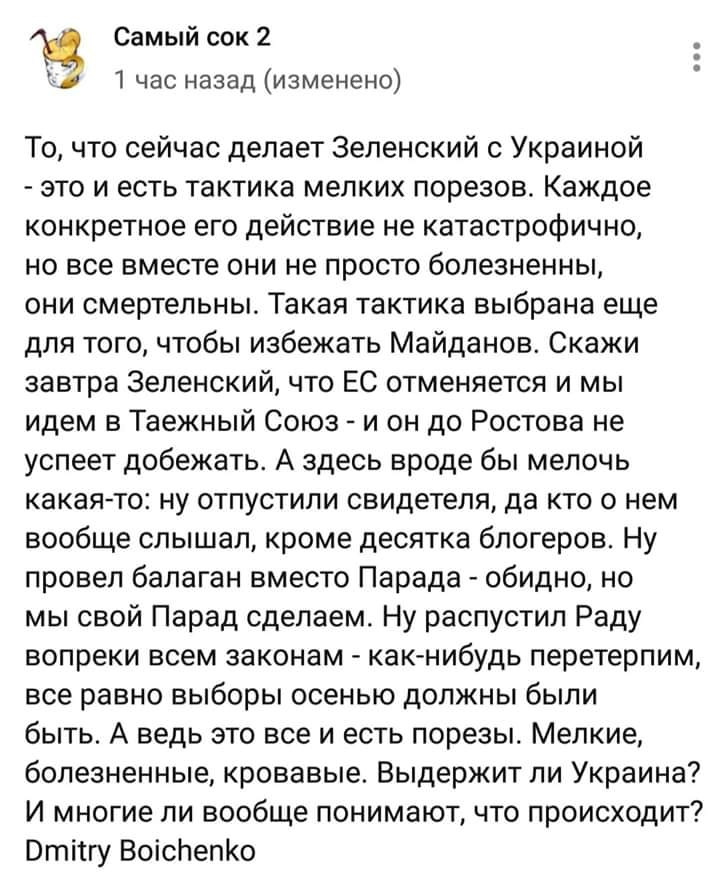
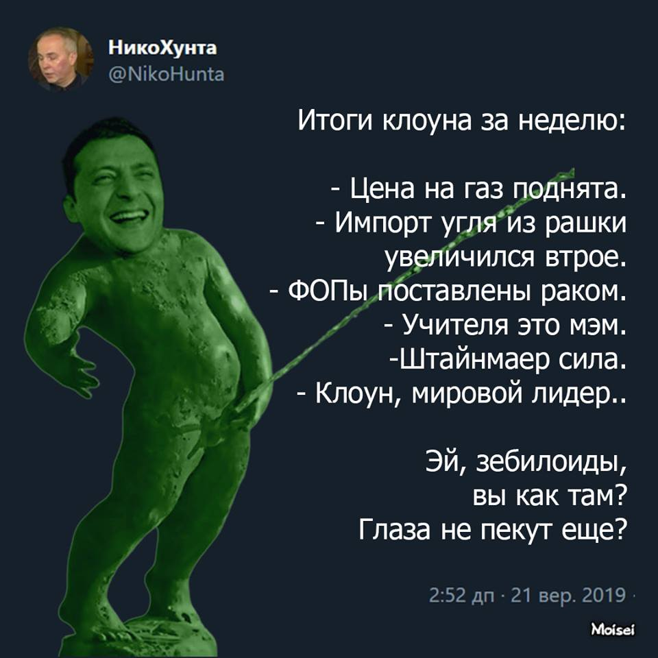
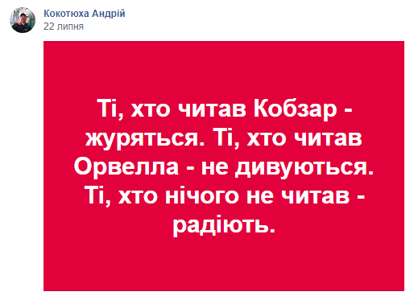

01.09.2019
Спостерігачів ОБСЄ помітили за спільним з окупантами патрулюванням позицій ЗСУ »»»
Україну готують до повернення під вплив Росії »»»
02.09.2019
Зеленський накинувся на людину, яка знімала його сина »»»
Знімати можна було лише дітей Порошенка, це було нормально, навіть можна було провокувати, це теж нормально, а от зняти гідрантика не можна ні в якому разі, це вже втручання у приватне життя
Країна 95: Зеленський перетворює Україну на авторитарну державу »»»
Розпочалась епоха відкритості:
Попросили сдать телефоны: СМИ узнали подробности встречи Зеленского со Слугой народа »»»
Хроніки реваншу: опальний міністр часів Януковича отримав кабінет в Офісі президента »»»
Хорошковський знову при владі. Так і на Азарова з Януковичем дочекаємося!
UPD: Що ж пов'язує Зеленського з Хорошковським? »»»
03.09.2019
Новий прем’єр має намір продавати землю іноземцям »»»
“Нам готують цифровий кoнцтaбip”: Правозахисники б’ють на сполох через законопроект 1083 »»»
UPD: Через скандальний Закон про електронні комунікації спецслужби РФ отримають всі дані про українців »»»
Країну закрито на деструкцію »»»
04.09.2009
Зеленський ветував закон про державне визнання і підтримку "Пласту" »»»
UPD: Ветувавши закон «Про Пласт» Зеленський проявив зневагу до українських патріотів-пластунів, які загинули на фронті захищаючи нашу державність »»»
UPD: Зеленський назвав причину ветування закону про Пласт »»»
UPD: Зеленский порушує Конституцію, ветуючи закони після відведеного терміну »»»
Гідранту закон не писаний!
UPD: Рада визнала "Пласт" та скаутський рух »»»
За словами представника президента у Верховній Раді першого віцеспікера Руслана Стефанчука, в новій редакції документ не створює привілеї для організації "Пласт". А й, справді, для чого в Україні підтримувати українське? Обійдуться!
СБУ підозрює "Мотор Січ" у підготовці диверсії і постачанні продукції в РФ »»»
Зеленский ветировал закон о закупке оборонной продукции »»»
Зеленський дав високу посаду дочці свого викладача »»»
Та ні, це не кумівство, просто, у гідранта всі друзі та знайомі випадково виявились найкращими управлінцями в країні.
Кабмін Зеленського проголосував за звільнення Кличка з посади голови Київської міської держадміністрації »»»
UPD: Відтепер Києвом керує Богдан »»»
У Кабміні пропонують новий податок для айтівців »»»
Захищати державну мову призначили екснардепа, який домігся скасування статті ККУ про незаконне збагачення »»»
Уволенный Зеленским начальник Закарпатской таможни ГФС Балуев вернулся на должность »»»
05.09.2019
Суд звільнив бойовика Цемаха, якого можуть видати Росії »»»
Відпустили! Терориста! ПІД ОСОБИСТЕ ЗОБОВ'ЯЗАННЯ!!! В ході спецоперації з затримання Цемаха один з співробітників СБУ ЗАГИНУВ! Поклав своє життя, щоб дістати для гаазького трибуналу ключового свідка у справі MH-17! А це зелене мурло його відпускає! Це усе, що треба знати про зеленського і його банду!
UPD: По решению суда ключевой свидетель уничтожения MH17 возвращается в ОРДЛО »»»
UPD: Що значить звільнення Цемаха? Перше, Україна втрачає прямі докази у справі МН-17 »»»
UPD: Якщо Нідерланди вирішать не продовжувати антиросійські санкції, вина за це ляже на Зеленського »»»

UPD: У Нидерландов возникло «много вопросов» к Украине после освобождения Цемаха »»»
UPD: Євродепутатка з Нідерландів назвала звільнення Цемаха тривожним сигналом »»»
UPD: Міжнародна репутація України втоптана в бруд »»»
UPD: Світові ЗМІ: Україна пішла на поводу у Кремля »»»
UPD: Передача ключового свідка у справі MH-17 означає лише одне: Зеленський працює на Путіна »»»
UPD: Звільнення Цемаха без завершення процесуальних дій є ознакою змови та державної зради »»»
І, попутно, доказом підконтрольності судів і суддів Банковій. Часи Януковича повернулися! #зробили_їх_разом
UPD: Почва под капитуляцию. Зеленский развязал руки Путину »»»
UPD: Ціна обміну. Як Зеленський руйнує коаліцію на підтримку України »»»
UPD: Путін заявив, що переговори між Росією та Україною з приводу взаємного обміну утримуваними особами виходять на фінальну стадію »»»
Не встигли з російського терориста зняти наручники, а путін уже плескає в долоні. Молодець зєля! Візьми собі цукерку!
UPD: ЗЕЛЯ – шавка путіна і агент ФСБ »»»

UPD: "Перетин червоних ліній" та "державна зрада": у Києві відбулася акція проти звільнення Цемаха »»»
UPD: Розслідування справи MH17 триватиме: нідерландські слідчі відреагували на звільнення Цемаха »»»
Звісно, що триватиме! Тільки Україна тепер в цьому розслідуванні виступатиме вже не як свідок, а як співучасник злочину!
UPD: "Контора" мовчить: при захопленні Цемаха загинув відомий кіборг-розвідник »»»
Суд звільнив з-під варти офіцера ЗСУ, якого підозрювали у роботі на ФСБ »»»
Законопроект президента Володимира Зеленського щодо змін в законі №1032 "Про прокуратуру" спрямований на встановлення тотального контролю над прокуратурою і силовими структурами »»»
UPD: В Україні відбувається концентрація силових структур в руках президента »»»
Просто гідрант створює поліцейську країну за російським сценарієм!
UPD: Рішення про скасування реформи прокуратури може призвести до того, що в Україні перестане діяти безвізовий режим »»»
Першого заступника генпрокурора часів Януковича Кузьміна зняли з розшуку »»»
Готується повний розпродаж держави »»»
UPD: В первую очередь будет продан «ПриватБанк» - Гончарук »»»
Давайте відгадаємо, а хто ж його купить? За парочку гривень?
06.09.2019
ДБР відмовляється порушувати справу проти Портнова »»»
Отже, проти Порошенка можна подавати позови, а проти Портнова - ні! То на кого працює ДБР?!
07.09.2019
Какого народа слуги? Окружение Зеленского празднует вместе с Бойко, Шуфричем, Левочкиным
Как Глава СБУ Баканов, помощник Зеленского Шефир и депутаты от Слуги народа вместе с Бойко, Шуфричем, Королевской, Левочкиным, Кучмой и женой Фирташа поздравляли Суркиса с юбилеем.
UPD: Баканов отримав подарунок від Суркіса на 15 тис.грн »»»
І це ні разу не корупція і ніяке не порушення закону! Нє!
В Уряді шукають можливість відновити виплату пенсій та пільг на окупованих територіях »»»
Міністр часів януковича заговорив про суд над добровольцями АТО »»»
“Щоб не дратували”: біля мосту в Станиці Луганській зняли всі українські прапори »»»
UPD: Військові "скриплять зубами": Офіс Президента Зеленського наказав зняти державні прапори в Станиці Луганській »»»
08.09.2019

09.09.2019
Суд зняв арешт з майна компанії, пов’язаної з ексміністром Клименком »»»
«Слуги народу» позбавили українське кіно держфінансування »»»
Министр объединенного министерства по делам ветеранов и временно оккупированных территорий Оксана Коляда оказалась Оксаной Гаврилюк — бывшим спикером МВД Захарченко, которая называла войну внутренним конфликтом, а боевиков «повстанцами» »»»
Україна планує продовжувати процес розведення військ на Донбасі »»»
UPD: Здавання України продовжується. Хутір Вільный і Золоте-4 знову стануть сірою зоною »»»
Просто русскіє нємного подвігают граніцу? Так, Вова?
В Верховной Раде предложили амнистию террористам »Л/ДНР» »»»
10.09.2019
Голова ВР Разумков блокує поїздку нашої делегації на засідання ПАРЄ »»»
UPD:
Зеленський позбавив Ар'єва та Герасимова вищих дипломатичних рангів »»»
...чим знову порушив чинне законодавство. Укази не відміняються!
Рада скасовує закупівлі ліків через міжнародні організації »»»
Зеленський дав високу посаду близькому другу Портнова »»»
Зеленський вирішив достроково розпустити ЦВК »»»
Для восстановления доверия за столом переговоров и деоккупации Донбасса в партии «Слуга народа» готовы говорить о выводе инструкторов НАТО с территории Украины »»»
АрселорМіттал виводить з України понад 10 мільярдів через безперервний пресинг СБУ »»»
Зеленський зустрівся з Коломойським – Офіс президента »»»
UPD: Прем'єр Гончарук відмовився коментувати зустріч з Коломойським »»»
Значить, повна відкритість влади, кажете? Ні! Значить підкилимні таємні переговори, які, судячи з фото, виглядають як інструктаж, проведений Коломойським для своїх слуг! Хазяїн говорить, слуги ретельно конспектують вказівки!
UPD: Коломойський і Зеленський зустрілися: як реагують соцмережі »»»
10.09.2019 — Президент Зеленський зустрівся з олігархом Коломойським. 11.09.2019 — в головному офісі Приватбанку пройшли обшуки. Соупадєніє?
UPD: Коломойский хочет устроить передел рынка »»»
UPD: Західні експерти спіймали узеленських на брехні »»»
Троє українських чиновників вирішили “неофіційно” відвідати окупований Луганськ »»»
"Нам нада пагаваріть" запущено офіційними українськими чиновниками. СБУ вже традиційно мовчить!
11.09.2019
Кулеба в Брюсселі заявив, що Україна більше не буде прагнути в НАТО »»»
Віце-прем’єр-міністр з питань євроатлантичної інтеграції заявляє про відмову від євроатлантичної інтеграції? А він тоді для чого потрібен? Зарплата не тисне?
Це не жарт: Дубинський відбиратиме незалежних членів наглядових рад держбанків »»»
Який нарід, такі у нього й депутати. Бидло!
Зеленский приостановил расторжение договоров с РФ и СНГ, инициированное Порошенко »»»
Зелені чоловічки проголосували за касові апарати для всіх ФОПів »»»
UPD: ФОПи та обіцянки Зеленського »»»
Витрати на купівлю, обслуговування PPO великі. Та й Інтернет - обов'язково, і звіти, і витрати на перевірки. А якщо не хочете штрафу за якусь помилку, то треба наймати бухгалтера. Отже малий бізнес стає збитковим, а громадянин безробітним. Вітання усім зе-баранам! #ви_зробили_це_разом !
UPD: Рада відмовилась скасовувати свої рішення про впровадження електронного чека »»»
Шах і мат, зелофани! Лох повинен платити! Усе ясно?
UPD: Автор законопроекта о введении касс получила полмиллиона от производителей кассовых аппаратов »»»
Рада підтримала законопроект про кешбек покупцю в разі незаконно виданого чека »»»
Посли ЄС і Канади розкритикували законопроєкти Зеленського з реформ судової влади і прокуратури »»»

12.09.2019
Расследование: как Зеленский грабил Украину еще не будучи президентом »»»
Міністр юстиції Денис Малюська виступає за створення ПРИВАТНИХ СУДІВ »»»
ППЦ!!!
Слуги народу впіймалися на кнопкодавстві »»»
А як обіцяли! Як обіцяли!
UPD: Народний депутат від "Слуги народу" Олена Копанчук, яка попалася на кнопкодавстві, заявила, що відмовляється скласти мандат »»»
UPD: Пойманный на кнопкодавстве депутат угрожал журналисту »»»
13.09.2019
Рада достроково припинила повноваження всіх членів ЦВК »»»
UPD: ЦВК переходить повністю під контроль президента »»»
UPD: Справжня причина розпуску ЦВК – проведення референдуму про легалізацію нових угод по Донбасу, які оформлять як волевиявлення народу України і виборів в ОРДЛО »»»
UPD: Следующий состав ЦИК будет "хорошим", - Разумков »»»
Паляться й не соромляться!
UPD: Рада призначила ЦВК: партія Зеленського отримала більшість »»»
Держава компенсує компанії Коломойського 5 мільярдів через неможливість літати над Донбасом та Кримом »»»
Отже, за те, що Росія напала на Україну відшкодовувати збитки Коломойському повинна Україна? Дійсно, "державницька" позиція!
Кінець децентралізації: влада "просить" місцеві бюджети повернути гроші на соціально-економічний розвиток »»»
Українці будуть утримувати жителів “ДНР” і “ЛНР”: так вирішив Зеленський… »»»
А Україна ж багата країна! В ній епоха бідності вже скінчилася. Можна вже й ізраїльських пенсіонерів годувати, й ОРДЛОшних...
ДБР проводить обшуки у банку Порошенка »»»
ДБР потрібні не показання Петра Порошенка, ДБР потрібні регулярні провокації
14.09.2019
Гончарук анонсував збільшення команди уряду "щонайменше удвічі" »»»
Ще більше чиновників в ОПі, ще більше чиновників в Кабміні! Вся влада чиновникам!
Гончарук вніс в Раду «Проект Закону бюдлт» »»»
Профффесіонали, нічого не скажеш!
У Верховній Раді попередили українців про підвищення тарифів »»»
От і скінчилася епоха бідності! Дочекалися!
Зеленський знову наклав... Вето. На новий Виборчий кодекс »»»
Воно усім обіцяло відкриті списки! Рада прийняла відкриті списки. Тепер воно накладає своє вето. У нас хтось дебіл, чи знову лижі не їдуть???
15.09.2019
Кінець епохи жадібності: Зеленский признал Коломойского главным по тарифам »»»
16.09.2019
В уряді запланували збільшення витрат на Офіс президента »»»
Новий уряд скасував заплановане підвищення зарплат вчителям з Нового року »»»
UPD: "Навчання має пройти 100 000 вчителів": очільниця МОН про підготовку освітян »»»
Підвищувати зарплати ми вам не збираємося, а от вимагати з вас будемо за підвищеними вимогами! За ті самі гроші.
UPD: «Аби підняти зарплати вчителям потрібно закрити школи»: Новосад озвучила несподіване рішення »»»
У Зеленського провели засідання Ради зі свободи слова і тут же ЗАСЕКРЕТИЛИ його результати »»»
Богдан заявив, що суспільство не хоче прес-конференцій Зеленського, поки не буде “масової зачистки” »»»
Ну все як у пуйла, тепер вони будуть зачищати ЗМІ, а потім влаштовувати "прямі лініі" з підготовленними питаннями, та підставними "випадковими" українцями. Можна лише поаплодувати ЗМІ і їх продажним журнашлюхам: ви зробили це разом!
У фракції "Слуги народу" є психічно хворі і просто божевільні - Богдан »»»
Так це й неозброєним оком видно!
Хамство. Грубість. Нахабство. Супрун розповіла, як відбувалася передача справ у МОЗ новому керівництву »»»
"С днем рождения, ЗЕмама!" Зеленські холуї привітали маму свого "сонцеликого" з днем народження:
А ми ще дивуємося хвалебним одам на адресу Пу!
UPD: Как они оскорбили мать Зеленского - Поярков [►]
17.09.2019
У Зеленського задумали запровадити хитру цензуру для ЗМІ, щоб журналісти “бігали на поклон” »»»
Готується створення підконтрольних владі ЗМІ. Все як запорєбріком! Повний копіпаст!
Заступниця голови ОП Анна Коваленко звинуватила ветеранів АТО в тому, що вони почали війну »»»
Під Києвом згорів будинок екс-голови НБУ Валерії Гонтарєвої »»»
Спочатку Валерію Гонтарєву в Лондоні збиває машина, потім згорає автомобіль її невістки (теж Валерії Гонтарєвої), тепер пожежа в будинку! Співпадіння? Чи ознаки переслідування?
UPD: До нападу на Гонтареву причетні особи, зацікавлені у справі ПриватБанку »»»
UPD: Портнов поддержал поджог дома Гонтаревой »»»
UPD: Гонтареву запросили у Конгрес США для обговорення нападів на неї »»»
У Центрі Разумкова провели дослідження рівня народної довіри. Перемогу здобуває... РАЗУМКОВ! »»»
Яка "несподіванка"!
Новим Головою КСУ стає призначенець Януковича! »»»
18.09.2019
Україна погодилась на «формулу Штайнмайєра» »»»
Отже, спочатку вибори під дулами автоматів і контролем проросійської ОБСЄ та легалізація сепаратистів як українських політиків, а потім, мабуть, може, коли-небудь, з часом, пізніше, якось, за нагоди - виведення російських військ з Донбасу! А може й не виведення! Припливли!
UPD: Клімкін пояснив суть формули Штайнмайєра »»»
UPD: Олена Зеркаль: Для України план Штайнмайєра — це два кроки назад »»»
UPD: Формула Штайнмаєра: як Україну перетворюють на Малоросію і прибирають з міжнародної політики »»»
UPD: Арахамія: у Зеленського не знають про погодження "формули Штайнмайєра" »»»
Або Арахамія нахабно бреше, або узеленських права рука не знає, що робить ліва!

Міністр закордонних справ Пристайко БРЕШЕ німецьким журналістам про зменшення кількості обстрілів на Донбасі »»»
І ми ще щось від фрау Меркель хочемо? Чи вона цього не прочитає?
Американці жахливо вражені діями узеленських »»»
Закони, поспіхом проштовхувані ОПою через ВР, яку контролюють слуги, свідчать, що ЗЕ узурпує владу
Верховная Рада отменила лицензии в сфере телекоммуникаций »»»
Усе! Тепер припинити діяльність антиукраїнських телевізійних ЗМІ стане НЕМОЖЛИВО!
Рада разрешила импорт электроэнергии из России »»»
А "бізнес на крові" - то все Порошенко! Не плутайте!
Рейдерське захоплення зеленими чоловічками Києва триває. Від словесних погроз Богдана перейшли до фізичного залякування!»»»
Слід визнати: в Україну повернулися 90-і. Бєспрєдел і пєрєдєл!
В'ятровича звільнили з посади голови Українського інституту національної пам’яті »»»
UPD: Ворог №1 імперії, або Кому заважав В’ятрович »»»
UPD: Єдина причина звільнення В’ятровича – ненависть нинішніх очільників держави до всього українського »»»
UPD: А малороси радіють, аж скачуть:
Сили ООС готуються до відведення на усій ліні розмежування »»»
При цьому окупанти припиняти обстріли навіть і не думають!
UPD: Розведення в одну сторону: Чому відведення ЗСУ ставить під удар Маріуполь та Харків »»»
UPD: Найманці РФ поспіхом риють траншеї та облаштовують позиції на ділянці розведення сил біля Петрівського »»»
Обліко моралє зеленої влади. Андрій Портнов – найінтелігентніша людина в Україні. Не вірте злим язикам »»»
Зловмисник заблокував рух на мосту Метро у Києві. Він стріляв і погрожував вибухом »»»
UPD: Загарбника моста не судитимуть за тероризм »»»
UPD: Операція-шоу "Терорист на мосту" »»»
Найбільше діями ЗЕкоманди досьогодні були незадоволені ветерани. Водночас певний громадянин паралізує центр Києва, погрожуючи підірвати міст. Громадянин виявляється військовим. Військовий вперше стає загрозою, а не захисником. Совпадєніє?
19.09.2019
Бюджет епохи бідності й брехні »»»
UPD: В уряді запланували збільшення витрат на Офіс президента »»»
UPD: Це вам не бариги: «зелені чоловічки» забрали у армії 28 мільярдів! »»»
UPD: В проекті бюджету зменшено витрати на субсидії. Виявляється, доходи українців зросли! »»»
З урахуванням того, що "маладая каманда" ще нічого для підвищення добробуту українців не зробила, то виникає просте питання: а чия ж це заслуга? Чи не тих, хто вкрав усю країну, часом, а?
UPD: У проекті Бюджету 2020 підвищення зарплат освітянам наразі нема »»»
UPD: У Держбюджеті-2020 повністю ігноруються соціальні очікування населення »»»
UPD: Бюджет на рік приймають востаннє: Гончарук розповів про трирічну декларацію »»»
"Пятілєтку в трі года! Виполнім і пєрєвыполнім! Догонім і пєрєгонім!" блд)
UPD: Бюджет команды Зеленского отбирает деньги у бедных и отдает их богатым »»»
Це ще не бюджет. Тільки проект. Але вже добре видно цінності, наміри і пріоритети зелених чоловічків. В цілому: армія - МІНУС, освіта - МІНУС, наука - МІНУС, книгодрукування - МІНУС, українське кіно - МІНУС, сільська медицина - МІНУС, соціальні програми - МІНУС... НАТОМІСТЬ: Зеленський+Богдан - ПЛЮС, Труба (+ Портнов) - ПЛЮС, Данилюк - найбільший ПЛЮС. І не забудьте про 5 млрд. Коломойському - жиииирний ПЛЮС!

Никаких активов не было, была «пирамида»: Гонтарева разнесла ложь Коломойского про активы в ПриватБанке »»»
Із засновника й спонсора ЛНР Єфремова знято арешт. Його адвокат тепер – у команді Зеленського »»»
UPD: Оприлюднено запис, як заступник Богдана домовлявся з керівником ДБР про звільнення ексрегіонала Єфремова »»»
UPD: Справу проти Єфремова за "диктаторські закони 16 січня" закрили »»»
20.09.2019
Помічник Зеленського назвав його “одним з найвеличніших лідерів світу” »»»
Пристайко виступив за повернення українських товарів на окупований Донбас »»»
Нафтогаз підняв ціни на блакитне паливо з 1 жовтня »»»
А як же оте страшне, на букву "Т" - тарифи? А! Він же пожартував! Чи ви забули?
21.09.2019
“Ви нас кинули”: прихильники Зеленського скаржаться, що нова влада вбиває їх бізнес »»»
«Кроти» в ДБР чи Труба прикриває витік інформації Портнову? »»»
UPD: Слідчі ДБР незаконно збирали інформацію про Порошенка і передавали Портнову »»»
22.09.2019
Проблеми Донбасу тепер вирішуватиме комік Сівохо »»»
Уся країна перетворюється на суцільний КВК. Донетчани обіржуться! Або наплачуться...
Чубаров: З серпня не можу зустрітися з представниками Президента у справах Криму »»»
Проблеми окупованого півострова призеденту і його зеленим чоловічкам не цікаві!

Бюджетна афера. Зе-команда вже вкрала у армії 28 мільярдів »»»
23.09.2019
Служанка народу Ірина Верещук проти руху України до НАТО, бо їй цього не дозволить Росія
І це каже не якась тітка з вулиці, а справжня глава ЗЕкомітету з державної безпеки України. А Порох завжди говорив: Ми не питатимо Росію, щодо нашого курсу до ЄС та НАТО. Ми йдемо своїм шляхом!
UPD: Кабмін виправдовує заяву представниці "Слуги народу" на "112 каналі" щодо НАТО »»»
"Ви всьо врьоті!"
UPD: Це все інсинуації ворогів: “слуга” Верещук заявила, що вона підтримує вступ України до НАТО »»»
Слуги урода перевзуваються на льоту!
Зеленський закликав українців повідомляти про факти корупції НАБУ »»»
UPD: РГК НАБУ закликає Президента не поширювати дезінформацію про повноваження НАБУ »»»
Виявляється призидент не знає функцій НАБУ! "Приємно!"
ГБР называет противодействие захвату РФ украинских областей как "создание вооруженных группировок" »»»
От і настав час, коли захисників країни почали називати злочинцями!
Депутаты запретили продажу товаров наложенным платежом »»»
Онлайн-расчеты в интернет-магазинах, почтовые отправления с наложенным платежом теперь вне закона
UPD: Перший пішов: Магазин Rozetka повідомив про підготовку до закриття через “Слуг народу” »»»
От просто цікаво: за кого вони там у "Розетці" голосували?
UPD: “Нова пошта” протестує проти законів про касові апарати »»»
British American Tobacco перенесла з Украни свій офіс через непередбачуваність нової влади »»»
Відтік інвесторів з України триває! Бо закликати західного інвестора потрібно не язиком, а реальними ділами, створенням умов для інвестицій!
Возвращаются налоговые "схемы Клименко" »»»
Коломойский продает "Центрэнерго" российский уголь по цене выше "Роттердам+" »»»
Аграрный барон с подпорченной репутацией от Зе будет проводить аграрную реформу в Украине »»»
Експрезидент-втікач Віктор Янукович готується повернутися в Україну »»»
24.09.2019
Чоловік головбуха “95 кварталу” стає директором Департаменту стратегічної розвідки Головного управління розвідки Міністерства оборони »»»
І нікакова кумавства здєсь нєт!
Повернулися "поняття": держслужбовці МОЗ звернулись з відкритим листом до Гончарука »»»
Зеленський ветував закон ТСК щодо імпічменту, прийнятий Радою минулого скликання »»»
Нічого особливого! Просто чергове порушення закону нашим гідрантом. Час уже звикнути й не перейматися! Проходимо далі!
Президент підписав закон про держслужбу за контрактом »»»
Тепер держслужбовці служитимуть не державі, а чиновнику, який їх призначає і підписує з ними контракт, бо процедура звільнення держслужбовця максимально спрощена!
Верховний Суд відхилив скаргу на призначення Богдана главою АП »»»
А в когось були сумніви щодо цього? Ручний суд тепер робитиме усе, що накаже Банкова!
25.09.2019
ВІЗИТ ЗЕЛЕНСЬКОГО ДО США
Виступ на Генасамблеї ООН »»»
Багато красивих слів ні про що в напівпорожній залі!
Сидять, ржуть, фоткають - повага, йопта!
А зарозумілість - зашкальна! Найвеличніший же лідер світу! Треба ж відповідати "титулу"!
UPD: Використана Зеленським у промові цитата з "Прощавай, зброє!" Хемінгуея належить... ДЕЗЕРТИРОВІ! »»»
Зрозуміло, що гідрант Хемінгуея не читав. Але ж його читали американці, адже це класик американської літератури! Отже, усі присутні адекватно сприйняли посил глави України: МИ БУДЕМО ЗДАВАТИСЯ!
UPD: Зеленський у США є яскравим прикладом того, як виглядає кухарка на чолі держави »»»
UPD: Володимир Зеленський повністю ігнорує українських журналістів на Генасамблеї ООН »»»
Зате рашистським пропагандонам роздає інтерв'ю на кожному кроці!
UPD: Богдан теж не відстає від свого шефа

Чи, може, то Зеленський не відстає від свого шефа Богдана? Заплутатись можна!
Зеленський зустрівся з Дональдом Трампом »»»
Це ж які комплекси повинні бути у цього пігмея, щоб стати попереду всіх аби на фото здаватися вищим! ПризЕдент копіює пуйла в усіх дрібницях!
UPD: Я нікому нічого не винен! У нас новий Руслан Рябошапка! – Зеленський зірвався під час прес-конференції з Трампом »»»
UPD: Нафта, яку Україна ніколи не купувала: де Зеленський помилився у розмові з Трампом »»»
UPD: Активісти громади США не задоволені організацією зустрічі з Зеленським »»»
Треба ж було зустрічатися саме з громадськими активістами, а не з тими, хто пройшов відбір Богдана і спецслужб!
Оприлюднено стенограму телефонної розмови між Трампом і Зеленським. Зеленський втягнув Україну в гучний міжнародний скандал! »»»
UPD: Зеленський крупно вляпався. Важко навіть зрозуміти обсяги політичного скандалу, що спалахнув зараз у США »»»
UPD: Зеленський у розмові з Трампом розкритикував Меркель і Макрона »»»
UPD: “Не знав, що це опублікують”: Зеленський кинувся виправдовуватися за критику Макрона і Меркель »»»
От і весь рівень суб'єктності гідрантика - його дозволу навіть НЕ ПИТАЛИ! Найвеличніші лідери планети - вони усі такі, безсуб'єктні?
UPD: Зеленський втягнув Україну в скандал, який закінчиться катастрофою »»»
Те, що наговорив "найвеличніший у світі лідер" Трампу - це плювок у бік Європи і найвпливовіших її лідерів, це плювок у бік антипутінської коаліції, це таке "велике дякую" їм за усю підтримку, яку на сьогодні має Україна, це відлизування усіх можливих місць Трампу й потрапляння між жорна двох політичних партій США, для кожної з яких тепер Зеленський - нерукопожатний. Увесь цей зашквар неминуче відіб'ється на ставленні світового політикуму до нашого пизидента й до всієї України в цілому. План Путіна щодо дискредитації України руками безграмотного некомпетентного дуріка спрацьовує на всі 100!
UPD: Оприлюднення телефонної розмови Трампа і Зеленського зачепило Європу »»»
UPD: Зеленський «спалює мости в Європі»: західні реакції на його критику Німеччини та Франції »»»
Плоди зеленої тупості: зводяться нанівець роки наполегливої робити, розбудови особистої довіри і партнрства з Берліном, Парижем і ЄС
UPD: В Європейському Союзі відреагували на критику президента Сполучених Штатів Америки Дональда Трампа та українського лідера Володимира Зеленського щодо недостатньої допомоги Україні з боку європейських країн »»»
UPD: Єврокомісія відреагувала на стенограму, нагадавши Україні про зобов’язання »»»
В ЄС гідрантика "натикали носом" в обсяги допомоги Україні! Якого дідька тобі ще не вистачає? Що ти сам робиш для того, щоб ця допомога розширювалася й посилювалася? Чи ти чекаєш, що Європа усе зробить за тебе?
UPD: Германия отреагировала на критику со стороны Зеленского »»»
Ну хоч Німеччина і робить вигляд, що усе нормально, але що там думають насправді? Хоча, може тому й роблять вигляд, що відновлення економічних стосунків з Росією Німеччині дуже вигідне й чим швидше Україна капітулює перед Росією (до того ж за власною ініціативою!), тим швидше можна буде самій Німеччині знімати санкції й відновлювати торгівлю з рашкою
UPD: Карикатура на Зеленського з німецького журналу Der Spiegel
UPD: Замість Путіна в Америці тепер висміюють Зеленського »»»
UPD: Американський комік Біл Маєр про телефонну розмову Трампа і Зеленського та її можливі наслідки
От Пороха і його дії закородонні коміки чомусь не висміювали. Тільки наш кловун домігся такого "успіху"! Америка РЖЕ з України і її дебільного народу!
UPD: Мечта Зеленского о мировой славе сбылась - американское ТВ показало его игру х...ем на рояле »»»
Ось в якому статусі тепер зображують презЕдента нашої країни! Дякую! Дуже дякую!
UPD: The Daily Show про тиск на Зеленського
UPD: Західні ЗМІ тепер називають Зеленського не інакше як Моніка Зеленскі »»»
Ну і хто тепер "актріса фільмов для взрослих"? Дожартувався, дебіл?
UPD: А "прокляті порохоботи" - ще ті троляки! ☺
UPD: Як Зеленський реагує на скандал навколо його розмови з Трампом у США?
А реакція традиційна - відмовчуватися й ховатися! Лідер, йопта!
UPD: “Гнусные порохоботы обижают Вовочку, обзывают Моникой, а он же ж просто попал, бедненький, просто такие обстоятельства!" »»»
UPD: Сказане Зеленським під час розмови з Трампом обумовлене його зобов'язаннями перед Коломойським »»»
UPD: Зеленський заявив, що не збирається публікувати українську стенограму розмови з президентом США Дональдом Трампом »»»
UPD: Зеленський: Україна не веде розслідувань за наказом інших країн »»»
Та ти шо? Спочатку погодився допомагати Трампу накопати компромат на Байдена та його сина, а потім "не веде"? Нє вєрю! Особливо цікавою виглядає фраза "Наші незалежні правоохоронні органи готові розслідувати..." Це після "прокурор 100% моя людина"!
UPD: У Білому домі визнали, що тиснули на українську владу, щоб вона розслідувала справу проти Байдена »»»
UPD: "Зеленський - безхребетний, що стрибав у кожну пастку Трампа" »»»
Поїздка Зеленського у США обійшлася у 7,3 мільйони гривень »»»
Олена Зеленська анонсувала ініціативу, яка насправді вже давно існує та реалізується в Україні »»»
Брехати про здобутки й видавати за своє зроблене попередниками - головна ознака зелених чоловічків. Епоха брехні розпочалась!
Бойовики “ЛНР” вільно заходять в Станицю Луганську, де зривають і викидають українські прапори »»»
Станиця уже сепарська. Зеленський здав її рашистам. Усім притомним українським громадянам залишається тільки одне: втікати звідти, рятувати свої життя
Льовочкіна їде у ПАРЄ: відтепер Україна говоритиме у Європі голосом Кремля і Медведчука »»»
Суд скасував арешт вертолітного майданчика Януковича »»»
Готуються до повернення "лєгітімного"?
Суд став на сторону Коломойського у справі щодо приватизації «Дніпроавіа» »»»
Народний депутат від "Слуги народу" Максим Бужанський замість того, щоб допомогти вирішити проблеми і притягнути до відповідальності недбалих чиновників у своєму окрузі у м.Дніпро, назвав батьків школярів (своїх виборців!) нецензурним словом і запропонував їм самим привести в порядок територію школи, скинувшись по 100 гривень на люки »»»
Ну що тут сказати? Тільки одне: "Бачили очі за що голосували? Тепер ЖРІТЬ ПОВНОЮ ЛОПАТОЮ! Ви самі привели це зелене хамло у владу! ВИ ЗРОБИЛИ ЦЕ РАЗОМ!"
26.09.2019
Перемовини з РФ про зупинку євроасоціації: за що Богдан отримав нагороду від Азарова »»»
Україна не домовилася з МВФ про новий кредит »»»
UPD: Кредитів не буде. Коломойський зірвав переговори МВФ і України »»»
Що ще незрозуміло? Аналітик Атлантичної ради США Андерс Ослунд заявив, що місія МВФ залишила Україну саме через Коломойського. "Покажіть ваші руки, містер Володимир Моніка Зеленський!"
UPD: Уряд лише імітує переговори з МВФ, оскільки влада не готова піти проти Коломойського »»»
Коротко про слуг "Слуг народу" або як слуги народу втрачають береги... і совість:
- “Слуга народу” взяв собі в помічники модель і танцівницю »»»
- Екскварталівець та «Слуга народу» Юрій Корявченков взяв собі в депутатські помічники дружину »»»
- «Слуга народу» Микола Тищенко взяв собі в помічники 22-річну модель »»»
- Кум Медведчука зі «Слуги народу» взяв у депутатські помічники бізнес-партнерку дружини »»»
Ексглава Нацполіції Князєв став радником Авакова »»»
Князєв був замом Авакова, став радником. Геращенко був радником Авакова, став замом. А ви кажете, що нічого не змінюється!
Люди Зеленського в СБУ. Їхні зв'язки, статки та «скелети в шафах» »»»
27.09.2019
В Україні різко впала середня зарплата »»»
Після епохи брехні стрімко почалася ще й епоха бідності!
Школярі та вчителі миколаївської школи поскаржилися Зеленському на місцеву владу »»»
Ну все як у рашці! Усе копіюють! Цікаво, на коліна перед сцарем скоро ставати почнуть? Бидло!
Прес-секретар Зеленського накинулася на журналіста »»»
UPD: «Схеми» оприлюднили повне відео конфлікту речниці президента та журналіста »»»
UPD: Мендель запевняє, що не відштовхувала від Богдана журналіста "Схем" »»»
UPD: Це вже не перший раз, коли Мендель перешкоджає роботі журналістів »»»
UPD: “Такого у США просто не буває”. Ще двоє журналістів заявили про інциденти з Мендель »»»
"Тенденция, однако!"
UPD: От тільки хто ж це у нас такий борець за свободу слова і вільну роботу журналістів? Невже та сама наша бубочка? »»»
Тот случай, когда место сидения определяет точку зрения!
UPD: "Мендель на дембель": журналісти запустили флешмоб і вимагають відставки прес-секретаря президента »»»
Наївні! Не для того наша квіточка розцвіла!..
UPD: Помічниці Зеленського подарували намордник і повідок »»»
У Зеленського заявили про намір різко скоротити число субсидіантів »»»
Як цілий Прем'єр-міністр Гончарук бреше лохторату про свої успіхи, видаючи зроблене попередниками за своє »»»
Коли там Гончарук став Прем'єром? То які три місяці "ми" ремонтували дорогу "Маріупіль-Запоріжжя"?
Ще одна брехня від зелених чоловічків - про безвізовий режим з Еквадором. Виступає пан Пристайко! »»»
Голова МЗС Угорщини: діалог з новими лідерами України простіший »»»

28.09.2019
Волкер повідомив держсекретарю США про відставку »»»
Той випадок, коли твоя дурість рикошетом б'є тих, хто захищає твою країну!
UPD: Відставка Волкера суттєво послабить Україну в протистоянні з РФ »»»
29.09.2019
Зеленський проігнорував вшанування пам'яті жертв розстрілів у Бабиному Яру. "Вперше Україна вибрала президентом єврея. І вперше президент сюди не прийшов." »»»
UPD: Про Зеленського, виклик швидкої та Бабин Яр: Журналісти розповіли, що сталось насправді »»»
UPD: Велика маленька брехня манкурта »»»
UPD: Поки всі сперечалися, чи був Зеленський в Бабиному Яру, його прес-секретарка похвалилася тим, що була на концерті “Кварталу” »»»
Саме так! У день скорботи вони веселилися!
На в'їзді в окупований Крим збудують легальні автостанції »»»
Відновлюємо транспортну блокаду, визнаємо законність окупації Криму
UPD: Криклій пояснив свою позицію щодо пасажирських перевезень до Криму »»»
UPD: Гончарук заявив, що уряд не відновлює пасажирські перевезення з Кримом »»»
Міністр оборони Загороднюк володіє фірмою, яка постачає в РФ бурове обладнання »»»
Міністр оборони веде бізнес з країною, з якою воює! А як там щодо "ліпєцкай фабрікі"? Не тисне?
Єлизавета Ясько: "Відмовлятися від спілкування з росіянами - неправильно" »»»
І ці "бубочки" наполягатимуть на виключенні рашки з ПАРЄ? Та ніколи!
UPD: Всплыли новые подробности про юную главу украинской делегации в ПАСЕ: никакого Оксфорда, оказывается, не было »»»
Чергова брехня від команди Зеленського. Можна уже й звикнути!
30.09.2019
У НАЗК відмовилися публікувати декларації військових прокурорів »»»
А ось тут ще й епоха відкритості почалася!
Попри обіцянку В.Зеленського зберегти Міністерство у справах ветеранів, його об'єднали із Міністерством тимчасово окупованих територій »»»
#зе_брехун
Зеленський видав указ про цілі сталого розвитку України до 2030 року »»»
От тільки де воно ГОЛОД побачило???
UPD: Цілі сталого розвитку України СПИСАНО з відповідного документу ООН »»», а документ з назвою "Цілі Сталого Розвитку: Україна", орієнтований на 2015-2030 роки було прийнято ще в 2017 році »»»
Що б не робили зелені чоловічки - з усього виходить БРЕХНЯ!
У МЗС Росії похвалили Зеленського »»»
Якщо тебе хвалить ворог - подумай, чи все ти робиш правильно?
Повернення Богатирьової: поплічниця Януковича заводить свої людей у МОЗ »»»
От вам і "нові обличчя молодих реформаторів"!
Кабмін хоче ліквідувати більше тисячі підприємств »»»
"Зємля крєстьянам, фабрікі рабочім!" Ой ні, не так! "Грабь наґраблєнноє!" Ось так точніше!